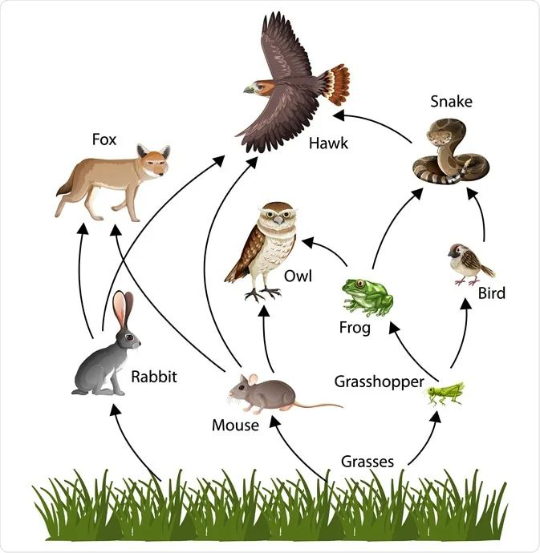
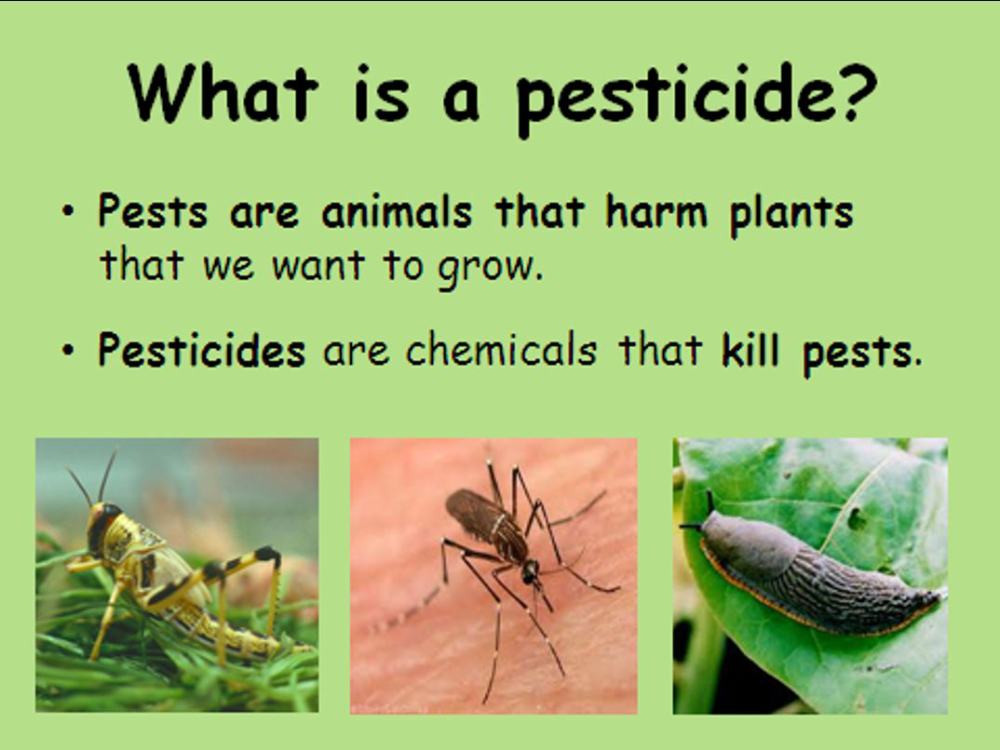

Habitats → food webs → adaptations → invasive species → bioaccumulation
An ecosystem is all the living and non-living things in an area, and how they interact.
생태계는 한 지역의 모든 생물·무생물과 그들이 서로 상호작용하는 방식입니다.
Ecosystems can be very small (a pond) or huge (a rainforest).
생태계는 작게는 연못, 크게는 열대우림까지 다양합니다.
A habitat is the specific place where an organism lives.
서식지(habitat)는 한 생물이 사는 특정한 장소입니다.
An ecosystem includes the habitat plus all the organisms in it and their non-living surroundings.
생태계(ecosystem)는 서식지 + 그 안의 모든 생물 + 무생물 환경을 모두 포함합니다.
Biotic factors are the living parts (plants, animals, bacteria, fungi).
생물적 요인(biotic)은 살아있는 것들입니다 (식물, 동물, 박테리아, 균류).
Abiotic factors are the non-living parts (water, sunlight, temperature, soil, air).
비생물적 요인(abiotic)은 살아있지 않은 것들입니다 (물, 햇빛, 온도, 토양, 공기).
Both biotic and abiotic factors affect whether organisms can survive in a habitat.
두 요인 모두 생물이 살아남을 수 있는지에 영향을 줍니다.
A food chain shows the order in which energy is passed from one organism to another.
먹이사슬은 에너지가 한 생물에서 다음 생물로 전달되는 순서를 보여줍니다.
Arrows point in the direction of energy flow — from prey to predator.
화살표는 에너지 흐름의 방향을 가리킵니다 — 먹잇감에서 포식자 쪽으로.
Example: grass → rabbit → fox.
예: 풀 → 토끼 → 여우.

A producer makes its own food using sunlight (plants and algae). Always at the start of a chain.
생산자(producer)는 햇빛으로 스스로 양분을 만드는 생물 (식물, 조류). 항상 사슬의 시작.
A primary consumer eats producers (herbivore).
1차 소비자는 생산자를 먹는 동물 (초식동물).
A secondary consumer eats primary consumers; a tertiary consumer eats secondary consumers.
2차 소비자는 1차를 먹고, 3차 소비자는 2차를 먹습니다.
A decomposer breaks down dead material (fungi, bacteria).
분해자는 죽은 물질을 분해합니다 (균류, 박테리아).
Most animals eat more than one type of food — a food web shows all the connected food chains in an ecosystem.
대부분의 동물은 한 가지만 먹지 않습니다 — 먹이그물은 생태계 안 모든 먹이사슬이 연결된 망입니다.
If one species disappears, many others are affected in a chain reaction.
한 종이 사라지면 연쇄 반응으로 여러 다른 종에 영향이 갑니다.
Herbivore: eats only plants (cow, rabbit).
초식동물: 식물만 먹음 (소, 토끼).
Carnivore: eats only animals (lion, eagle).
육식동물: 동물만 먹음 (사자, 독수리).
Omnivore: eats both plants and animals (human, bear).
잡식동물: 식물과 동물 모두 먹음 (인간, 곰).
An adaptation is a feature that helps an organism survive and reproduce in its habitat.
적응은 생물이 서식지에서 살아남고 번식할 수 있게 도와주는 특징입니다.
Adaptations develop slowly over many generations.
적응은 여러 세대에 걸쳐 천천히 발달합니다.
Desert organisms are adapted to save water and handle extreme heat.
사막 생물들은 물을 아끼고 더위를 견디도록 적응했습니다.
A cactus has a thick stem to store water, spines (instead of leaves) to reduce evaporation, and deep roots.
선인장은 두꺼운 줄기로 물 저장, 잎 대신 가시로 증발 감소, 깊은 뿌리를 가집니다.
A camel has a hump that stores fat, can drink large amounts of water at once, and has long eyelashes against sandstorms.
낙타는 지방을 저장하는 혹, 한 번에 많은 물을 마실 수 있는 능력, 모래폭풍에 대비한 긴 속눈썹을 가집니다.
Arctic animals are adapted for the extreme cold.
북극 동물들은 극심한 추위에 적응했습니다.
The polar bear has thick fur and a layer of blubber to keep warm, plus large paws to spread weight on ice.
북극곰은 두꺼운 털과 지방층(blubber)으로 체온 유지, 큰 발로 얼음 위에서 무게를 분산시킵니다.
The arctic fox has small ears (less heat loss) and a thick winter coat that changes colour with the seasons (camouflage).
북극여우는 열 손실이 적은 작은 귀, 계절에 따라 색이 바뀌는 두꺼운 겨울 털(위장)을 가집니다.
A native species is one that naturally lives in an area.
토착종은 그 지역에 원래부터 살고 있는 종입니다.
An invasive species is one that has been introduced to a new area and harms the local environment.
침입종은 다른 지역에서 들어와 그 지역 환경에 해를 끼치는 종입니다.
Invasive species are successful because they often have no natural predators in the new area.
침입종이 성공하는 이유는 새 지역에 천적이 없기 때문입니다.
They compete with native species for food and habitat, so native populations decline.
먹이·서식지를 두고 토착종과 경쟁해서, 토착 개체수가 줄어듭니다.
They may eat native species that have no defences against them.
방어 수단이 없는 토착종을 잡아먹기도 합니다.
They can spread new diseases and damage crops.
새로운 질병을 퍼뜨리고 농작물에 피해를 줄 수 있습니다.
In extreme cases they can cause native species to become extinct.
심한 경우 토착종을 멸종시키기도 합니다.
New Zealand's unique birds (kiwi, kakapo) evolved without mammals.
뉴질랜드의 독특한 새들(키위, 카카포)은 포유류 없이 진화했습니다.
When rats, stoats and possums were brought by humans, native birds had no defence.
인간이 쥐·담비·포섬을 들여오자 토착 새들은 방어 수단이 없었습니다.
1080 is a controversial pesticide used to control these invasive predators.
1080은 이 침입성 포식자를 통제하기 위한 논쟁적인 살충제입니다.
A pest is an animal, insect or plant that harms crops humans want to grow.
해충(pest)은 인간이 키우는 작물에 해를 끼치는 동물·곤충·식물입니다.
A pesticide is a chemical used to kill pests; an insecticide is a pesticide that kills insects.
농약(pesticide)은 해충을 죽이는 화학물질이고, 살충제(insecticide)는 곤충을 죽이는 농약입니다.
Used to protect crops and to kill insects that spread disease (e.g. mosquitoes carrying malaria).
농작물을 보호하고, 질병을 옮기는 곤충(예: 말라리아 모기)을 죽이는 데 쓰입니다.

Bioaccumulation is the gradual build-up of a toxic substance in an organism over time.
생물 농축은 시간이 지나면서 독성 물질이 생물의 몸에 점점 쌓이는 현상입니다.
The toxin does not break down, so it stays in the body (often stored in fat).
독소가 분해되지 않아 몸 안에 (주로 지방에) 남습니다.
The longer the animal lives, the more toxin it accumulates.
동물이 오래 살수록 독소가 더 많이 쌓입니다.
Toxin concentration increases at each step (trophic level) up the food chain.
독소 농도는 먹이사슬을 올라갈 때마다(영양 단계) 증가합니다.
Example: small fish eats 100 polluted plankton → big fish eats 100 small fish → eagle eats 100 big fish. The eagle gets 1,000,000 plankton's worth of toxin!
예: 작은 물고기가 오염된 플랑크톤 100개 → 큰 물고기가 작은 물고기 100마리 → 독수리가 큰 물고기 100마리. 독수리는 플랑크톤 100만 개분의 독소를 받습니다!
Top predators get the highest doses, so they often get sick or fail to reproduce.
최상위 포식자가 가장 많은 양을 받아서 병들거나 번식하지 못합니다.
DDT was a powerful insecticide used in the 1940s-60s to kill mosquitoes and stop malaria.
DDT는 1940-60년대에 모기를 죽이고 말라리아를 막기 위해 쓰인 강력한 살충제입니다.
But DDT bioaccumulated in birds and made their eggshells too thin to hatch.
그런데 DDT가 새들 몸에 농축되어 알껍데기가 너무 얇아져 부화하지 못했습니다.
Populations of eagles, falcons and pelicans crashed; DDT was banned in most countries in the 1970s.
독수리·송골매·펠리컨 개체수가 급감했고, DDT는 1970년대에 대부분 국가에서 금지되었습니다.
An ecosystem is all the living and non-living things in an area and how they interact.
생태계는 한 지역의 모든 생물과 무생물, 그리고 그들이 어떻게 상호작용하는지를 말합니다.
A habitat is just the specific place where an organism lives.
서식지는 한 생물이 사는 특정 장소만을 가리킵니다.
So a habitat is part of an ecosystem — the ecosystem also includes the other organisms and the non-living surroundings.
즉 서식지는 생태계의 일부 — 생태계는 다른 생물들과 무생물 환경까지 포함합니다.
An arrow shows the direction of energy flow — it always points from the prey to the predator (or from the food to the eater).
화살표는 에너지 흐름의 방향을 가리킵니다 — 항상 먹잇감에서 포식자 쪽 (또는 음식에서 먹는 쪽).
For example: grass → rabbit → fox means the rabbit eats the grass and the fox eats the rabbit.
예: 풀 → 토끼 → 여우는 토끼가 풀을, 여우가 토끼를 먹는다는 뜻입니다.
1) The thick stem stores water for use during dry periods.
1) 두꺼운 줄기는 건기에 쓸 물을 저장합니다.
2) Spines instead of leaves have a much smaller surface area, reducing water loss by evaporation.
2) 잎 대신 가시는 표면적이 훨씬 작아 증발로 인한 수분 손실을 줄입니다.
3) Deep or wide roots help collect as much water as possible when it does rain.
3) 깊거나 넓은 뿌리로 비가 올 때 최대한 많은 물을 모읍니다.
Invasive species are often successful because they have no natural predators in the new area to control their numbers.
침입종은 새 지역에 개체수를 조절할 천적이 없어서 잘 퍼집니다.
They may also compete strongly with native species for food and habitat.
또한 토착종과 먹이·서식지를 두고 강하게 경쟁합니다.
One harmful effect is that they cause native populations to decline — sometimes to extinction.
해로운 영향 한 가지: 토착 개체군이 감소하고, 때로는 멸종에 이르게 합니다.
Pesticides do not break down in the body, so they build up over time in any organism that takes them in.
농약은 몸 안에서 분해되지 않아 시간이 갈수록 생물 안에 쌓입니다.
At each trophic level, an animal eats many smaller organisms below it, so the toxin concentrates further.
각 영양 단계에서 동물은 자기보다 많은 수의 하위 생물을 먹기 때문에 독소가 더 농축됩니다.
Example: small fish eats lots of plankton; big fish eats many small fish; an eagle eats many big fish.
예: 작은 물고기는 많은 플랑크톤을, 큰 물고기는 많은 작은 물고기를, 독수리는 많은 큰 물고기를 먹습니다.
The eagle (the top predator) ends up with the highest concentration of pesticide, which can make it ill or unable to reproduce.
독수리(최상위 포식자)는 가장 높은 농도의 농약을 받게 되어 병들거나 번식하지 못합니다.
DDT was very effective at killing insects but it bioaccumulated in animals further up the food chain.
DDT는 곤충 살상에 매우 효과적이었지만 먹이사슬 위쪽 동물에 생물 농축되었습니다.
In birds, the build-up of DDT caused their eggshells to become too thin, so the eggs cracked before hatching.
새의 경우, DDT가 쌓이면서 알껍데기가 너무 얇아져 부화 전에 깨졌습니다.
Bird populations such as eagles and falcons crashed, so DDT was banned in the 1970s.
독수리·송골매 같은 새 개체수가 급감하여 DDT는 1970년대에 금지되었습니다.